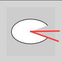
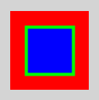

Das schöne an Processing ist, dass man damit zeichnen kann. Das bedeutet du kannst sofort sehen, was du programmierst und welche Auswirkungen es hat, wenn du Dinge an deinem Code veränderst. Fangen wir also direkt damit an.
Koordinaten
Computermonitore und Bildschirme im allgemeinen bestehen aus einem Gitter kleinster Punkte, aus denen sich das Bild zusammensetzt. Diese Punkte nennt man Pixel (für engl. picture element). Bilder werden erzeugt, indem die Pixel mit verschiedenen Farben belegt werden, im einfachsten Fall mit Schwarz und Weiß. Um jeden einzelnen Pixel gezielt ansprechen zu können, verwendet man Koordinaten. Eine Koordinate gibt die x-Position an (links nach rechts), die andere gibt die y-Position an (oben nach unten). Das Koordinatensystem ist ähnlich zu dem, das ihr aus der Schule kennt, steht aber auf dem Kopf.
In der Abbildung oben hat der obere Punkt die Koordinaten x=0 und y=1 oder kurz (0, 1). Der untere Punkt hat die Koordinaten (3, 3). Das Pixel-Koordinatensystem beginnt bei Null. Das heißt, wenn ein Fenster eine Auflösung von 800x600 hat, dann gibt es die x-Koordinaten 0, 1, ..., 799 und die y-Koordinaten 0, 1, ..., 599.
Befehle
Beim Programmieren geht es darum, dem Computer Befehle zu geben. Ein Computerprogramm ist eine Liste von Befehlen. Ein Beispiel für einen Befehl ist
Zeichne einen Punkt an der Stelle (10, 50) !
In Processing sieht das so aus:
point(10,50);Der Befehl hat drei Teile:
- der Name "point" umschreibt, was die Aufgabe ist (Punkt zeichnen!)
- die zwei Parameter "(10, 50)" geben Details zur Aufgabe (kommt an die Stelle 10, 50)
- das Semicolon zeigt an, dass der Befehl hier aufhört
Der Computer führt die Befehle aus, wie ein gut erzogener Hund. Wenn man dem Hund "Sitz!" sagt, dann sitzt er und wenn man ihm sagt "Hol Stöckchen!", dann holt er das Stöckchen. Wichtig ist, dass der Hund aber nur die Befehle ausführen kann, die man ihm beigebracht hat. Genauso ist es mit dem Computer. Kennt er einen Befehl nicht - oder erkennt er einen Befehl nicht, z.B. weil wir uns vertippt haben - dann gibt er uns eine Fehlermeldung anstatt den Befehl auszuführen. Da unterscheidet er sich vom Hund.
Befehle & Funktionen
Ein wichtiger Begriff im Zusammenhang mit Befehlen sind Funktionen. Wenn du deinem Programm den Befehl gibst, einen Punkt zu zeichnen, dann reagiert es, indem es den Befehl ausführt. Genauso könnte man aber auch sagen es führt eine Funktion aus. Was ist hier der Unterschied?
Bleiben wir bei dem Beispiel mit dem gut erzogenen Hund. Angenommen ich gebe ihm den Befehl "Hol Stöckchen!", dann reagiert der Hund, indem er meinen Befehl ausführt. Dabei führt er eine Reihe von Aktionen aus: Er rennt los, beobachtet, wo das Stöckchen landet, er sucht danach, nimmt es in den Mund, rennt zurück und gibt es mir. Diesen Ablauf von Aktionen habe ich definiert und dem Hund beigebracht, dass es das tun soll, wenn ich ihm den Befehl gebe. Und das ist eine Funktion: Eine Definition von Aktionen, die bei beim Aufruf eines Befehls ausgeführt werden.
Für den Anfang werden wir nur Befehle ausführen, die in Processing bereits vorhanden sind. Sobald wir damit vertraut sind, fangen wir an unsere eigenen Funktionen zu definieren.

Einfache Formen (Grafische Primitive)
Der Punkt ist die einfachste Form in Processing. Es gibt aber auch noch andere Formen. Jede Form hat ihren eigenen Befehl und ihre eigenen Parameter, die übergeben werden müssen. Hier eine Liste der einfachen Grundformen:
Linie
Um eine Linie zu zeichnen, gibt man den Startpunkt (x1, y1) und den Endpunkt (x2, y2) der Linie an, also vier Parameter.
// Allgemein
line(x1, y1, x2, y2);
// Beispiel
line(20, 10, 100, 10);Rechteck
Beim Rechteck gibst du die Position der oberen linken Ecke an und Breite und die Höhe des Rechtecks.
// Allgemein
rect(x, y, breite, hoehe);
// Beispiel
rect(10, 10, 100, 50);Dreieck
Wenn du ein Dreieck zeichnen möchtest, musst du noch einen dritten Punkt (x3, y3) angeben.
// Allgemein
triangle(x1, y1, x2, y2, x3, y3);
// Beispiel
triangle(0, 100, 80, 100, 40, 20);Ellipse
Bei Ellipsen geben wir den Mittelpunkt (x, y) an, dann den Durchmesser in der Breite und den Durchmesser in der Höhe.
// Allgemein
ellipse(x, y, durchmesserBreite, durchmesserHoehe);
// Beispiel
ellipse(50, 50, 80, 50);Komplexere Formen
Ellipsen-Segment
Um nur einen Teil der Ellipse zu zeichnen, gibst du zusätzlich den Startwinkel alpha und den Endwinkel beta an. Die Winkel sind im Bogenmaß anzugeben (360° entspricht 2*PI). Das PI ist als Konstante in Processing gespeichert, so dass du damit rechnen können. Allgemein sieht der Befehl arc so aus:
arc(x, y, b, h, alpha, beta); // AllgemeinDie Winkel werden relativ zu einer gedachten Referenzlinie vom Mittelpunkt nach rechts gemessen.
Zum Beispiel bei einem Startwinkel von 30°, gemessen im Uhrzeigersinn in Bezug auf die Referenzlinie.

Ein Endwinkel von 330° sieht dann so aus:
Du musst die Winkel dabei im Bogenmaß angeben. Wem das zu kompliziert ist, kann die Funktion radians() verwenden, um in Grad zu denken. Hier das gleiche wie oben mit Grad:
arc(50, 50, 80, 50, PI/6, 2*PI - PI/6); // Bogenmaß
arc(50, 50, 80, 50, radians(30), radians(330)); // Umrechnung von Grad mit radians()Allgemeines Viereck
Wenn du eine Form mit vier Ecken zeichnen willst, das nicht notwendigerweise ein Rechteck ist, dann verwende den Befehl quad() und übergib diesem die vier Eckpunkte (x1, y1), (x2, y2), (x3, y3) und (x4, y4) hintereinander weg.
quad(x1, y1, x2, y2, x3, y3, x4, y4); // Allgemein
quad(10, 10, 80, 20, 90, 80, 15, 50); // BeispielPolygone
Du kannst auch Formen definieren, indem du eine Reihe von Punkten definierst, die dann mit Linien verbunden werden. Das nennt man auch Polygon (Vieleck).
Schauen wir mal, wie das funktioniert:
beginShape();
vertex(50, 10);
vertex(80, 80);
vertex(5, 35);
endShape(CLOSE);Jetzt erweitern wir das noch um zwei Ecken links oben:
beginShape();
vertex(50, 10);
vertex(80, 80);
vertex(5, 35);
vertex(10, 0); // neue Ecke
vertex(30, 30); // neue Ecke
endShape(CLOSE);Das CLOSE in endShape() schleißt den Polygon ab. Du kannst es auch weglassen.
beginShape();
vertex(50, 10);
vertex(80, 80);
vertex(5, 35);
vertex(10, 0);
vertex(30, 30);
endShape(); // offen lassen Du musst also Processing zunächst mit beginShape() sagen, dass du ein Vieleck definieren möchtest. Dann definierst du die Eckpunkte mit vertex() (engl. für Knotenpunkt). Mit endShape()
gibst du das Signal zum Zeichnen. Deshalb steht dort in Klammern noch eine weitere Angabe, nämlich, ob der letzte Punkt mit dem ersten verbunden sein soll, dann gib CLOSE an.
Zeichenmodus
In Processing gibt es für Rechtecke 4 verschiedene Zeichenmodi, die je nach Situation am besten geeignet sind:
CORNER: In diesem Modus geben die erstenn beiden Parameter die Position der oberen linken Ecke an und die letzten beiden die Höhe und die Breite des Rechtecks. Dies ist der Standardmodus und in vielen Fällen ausreichend.
rect(xGanzLinks, yGanzOben, b, h);CENTER: Hier geben die ersten beiden Parameter die Mitte des Rechtecks an und die letzten beiden wieder die Höhe und die Breite. Das ist hilfreich, wenn die Mitte deines Rechtecks an einem bestimmten Punkt sein soll, wie z.B. die Mausposition oder in der Mitte des Fensters.
rect(xMitte, yMitte, b, h);RADIUS: Auch in diesem Modus sind die ersten beiden Werte die Mitte es Rechtecks. Die letzten beiden legen den Radius fest (horizontal und vertikal), also die Hälfte der Breite bzw. Höhe.
rect(xMitte, yMitte, bRadius, hRadius);CORNERS: In diesem Modus legst du mit den vier Parametern zwei Eckpunkte des Rechtecks fest: Erst oben links, dann unten rechts. Das ist hilfreich, wenn die Ecke deines Recktecks an einem bestimmten Punkt sitzen soll.
rect(xGanzLinks, yGanzOben, xGanzRechts, yGanzUnten);Achtung: Sobald du rectMode verwendest, gilt der neue Modus so lange bis wieder rectMode aufgerufen wird. Wenn du z.B. wieder den ursprünglichen Modus herstellen möchtest (linke-obere Ecke + Breite + Höhe), gib rectMode(CORNER) an:
rectMode(CORNERS); // Zwei-Ecken-Modus
rect(5, 5, 15, 15);
rectMode(CORNER); // "normaler" Modus
rect(15, 15, 2.5, 2.5);Wenn du eine Ellipse zeichnest, dann ist das einem Rechteck sehr ähnlich. Man kann sich auch vorstellen, dass man ein Rechteck als Außenmaß für die Ellipse angibt. Entsprechend gibt es auch vier Zeichenmodi für Ellipsen:
- ellipseMode(CENTER) ist der Standardmodus; hier werden der Mittelpunkt, dann x-Durchmesser und y-Durchmesser angegeben
- ellipseMode(RADIUS) ist der Standardmodus; hier werden der Mittelpunkt, dann x-Radius und y-Radius angegeben, sprich die Hälfte der Breite bzw. Höhe
- ellipseMode(CORNER) hier wird das umgebende Rechteck angegeben und zwar mit linken, oberen Punkt, dann Breite, dann Höhe
- ellipseMode(CORNERS) hier wird auch das umgebende Rechteck angegeben, allerdings mit zwei Punkten: den linken, oberen und den rechten, unteren
Reihenfolge der Zeichnungen
Wenn du mehrere Formen zeichnest, verdecken die später gezeichneten alle früheren.
ellipse(40, 40, 35, 35);
rect(40, 40, 40, 30);
triangle(60, 60, 20, 90, 60, 90);Das kannst du nutzen, um komplexere Figuren durch Überlagerung zu erschaffen, z. B. sowas:
rect(10, 10, 80, 60);
arc(50, 71, 80, 80, radians(180), radians(360));
Farben
Graustufen und fill
Du kannst deine Figuren variieren, indem du bestimmst, mit welchem Grauwert das Innere gefüllt werden soll. Grauwerte werden von 0 (schwarz) bis 255 (weiß) angegeben. Stellen dir vor, du würdest die "Lichtmenge" angeben (0 = keins, 255 = alles). Es gibt 256 Werte, weil das der Wertumfang ist, den ein Byte (8 Bit) speichern kann. Der Befehl, um die Farbe festzulegen, mit der Figuren gefüllt werden, lautet fill. Sobald du diesen Befehl verwendest, gilt er für alle weiteren Zeichenbefehle bis zum nächsten fill. Zum Beispiel alles schwarz füllen:
fill(0);
ellipse(40, 40, 35, 35);
rect(40, 40, 40, 30);
triangle(60, 60, 20, 90, 60, 90);Oder drei Figuren jeweils unterschiedlich füllen:
fill(0);
ellipse(40, 40, 35, 35);
fill(100);
rect(40, 40, 40, 30);
fill(255);
triangle(60, 60, 20, 90, 60, 90);Kontur und stroke
Die Umrandung/Kontur einer Form kann man mit dem Befehl stroke (engl. für Pinselstrich) einfärben. Die Dicke der Umrandung kontrolliert man mit dem Befehl strokeWeight (weight ist engl. für Gewicht). Zum Beispiel weißer Rand, schwarze Füllung:
strokeWeight(4);
stroke(255);
fill(0);
ellipse(40, 40, 35, 35);Mit dem Befehl noStroke schaltest du das Zeichnen der Kontur vollständig aus (solange bis wieder der Befehl stroke kommt).
noStroke();
ellipse(20, 20, 35, 35);
rect(60, 60, 35, 35);
Hier wird die Kontur beim zweiten Objekt wieder eingeschaltet:
noStroke();
ellipse(20, 20, 35, 35);
stroke(0); // schwarze Kontur
rect(60, 60, 35, 35);Auf ähnliche Weise kannst du das Füllen von Figuren ausschalten. Mit noFill werden Figuren nicht gefüllt, d.h. unter anderem, dass darunterliegende Objekte sichtbar sind:
rect(20,20,60,60);
noFill();
ellipse(20, 20, 35, 35);
rect(60, 60, 35, 35);Zeichenfläche und Hintergrund
Mit dem Befehl size() legt man die Größe (Breite und Höhe) des Zeichenfensters fest, das normalerweise 100x100 Pixel groß ist. Beispiel, um ein 800x600-Pixel großes Fenster zu erhalten:
size(800, 600);Die Hintergrundfarbe setzt man mit background(). Hier z.B. auf schwarz...
background(0); // hier auf schwarz
background(255); // hier auf weißDer Hintergrund ist auf ein Grau voreingestellt.
Wichtig: Der Befehlt background übermalt das gesamte Fenster mit der angegebenen Farbe. Es ist also wichtig, dass background vor allem anderen Zeichencode gesetzt wird.
Richtig:
background(50); // Bild wird mit Grau übermalt
rect(25,25,50,50);Falsch:
rect(25,25,50,50);
background(50); // Bild wird mit Grau übermaltFarben
Um bei stroke oder fill eine Farbe anzugeben, gibt man nicht einen, sondern drei Werte an: jeweils für Rot, Grün und Blau (deshalb auch RGB-Farbe). Jeder Wert kann zwischen 0 und 255 (inklusive) liegen. Wenn man einen der Werte auf 255 setzt und die anderen auf 0, bekommt man also reines Rot oder Grün oder Blau:
strokeWeight(4);
background(255, 0, 0);
stroke(0, 255, 0);
fill(0, 0, 255);
rect(20, 20, 60, 60);

Merkhilfe: R - G - B. Das heißt: Rot - Grün - Blau. Das ist genau die Reihenfolge der Zahlen bei allen Farbbefehlen.
Für eine rote Füllung, setzen nur den ersten Wert aufs Maximum (= 255):
fill(255, 0, 0); // rot
fill(0, 255, 0); // grün
fill(0, 0, 255); // blauAuch der Befehl background() funktioniert mit drei RGB-Werten.
Transparenz
Überall dort, wo du einen Grauwert oder eine Farbe einsetztst, also bei fill oder stroke, kannst du die Linie/Fläche auch transparent schalten. Transparent bedeutet, dass die darunter liegende Farbe durchscheint. Transparenz steuerst du, indem dudie Deckkraft mit einem Wert zwischen 255 (voll deckend) bis 0 (voll transparent) einstellen. Man nennt diesen Wert auch den Alpha-Wert. Bei den Befehlen fill oder stroke wird die Deckkraft einfach durch einen zweiten Wert (neben der Graustufe) bzw. einen vierten Wert, wenn du Farbe verwendest, angegeben.
Beispiel mit Gaustufen und Alpha-Wert:
fill(0); // schwarz
ellipse(40, 40, 35, 35);
fill(100, 230); // grau, sehr deckend
rect(40, 40, 40, 30);
fill(255, 50); // weiß, sehr transparent
triangle(60, 60, 20, 90, 60, 90);Beispiel mit Farben und Alpha-Wert:
fill(255, 0, 0); // rot
ellipse(40, 40, 35, 35);
fill(0, 255, 0, 230); // grün, sehr deckend
rect(40, 40, 40, 30);
fill(0, 0, 255, 50); // blau, sehr transparent
triangle(60, 60, 20, 90, 60, 90);Zusammenfassung
- Das Koordinatensystem bei Processing beginnt oben links mit den Koordinaten 0 | 0.
- Ein Befehl besteht aus Name, Parameter und Semikolon am Ende.
- Das, was Programm macht, wenn man ihm einen Befehl erteilt, wird als Funktion bezeichnet.
- Formen
- Grundformen: Processing stellt Befehle zum Zeichnen vieler Grundformen bereit. Anfangs- und Endpunkte oder andere Informationen zum Zeichnen werden als Parameter übergeben. Du hast folgende Befehle kennen gelernt: line, triangle, rect, ellipse, arc und quad.
- Polygone: Beliebige Polygone (Vielecke) zeichnet man mit einer Reihe von vertex-Befehlen (Eckpunkte), die von beginShape() und endShape() umschlossen sind.
- Zeichenreihenfolge: Eine Zeichnung entsteht in der Reihenfolge, wie die Befehle im Code stehen (von oben nach unten). Wenn du mehrere Formen zeichnest, verdecken die später gezeichneten alle früheren.
- Zeichenmodus: rectMode und ellipseMode bestimmen, wie die From gezeichnet werden soll. Es gibt CORNER, RADIUS, CENTER, und CORNERS.
- Farben
- Graustufen: Eine Graustufe wird als Zahl zwischen 0 und 255 (inklusive) angegeben, je kleiner desto schwärzer. Merkhilfe: Zahl gibt Lichtmenge an.
- Befehle: Mit fill() legst du die Farbe im Innern einer Form fest, mit stroke() die Farbe der Kontur. Mit noFill() und noStroke() verhinderst du das Malen der Füllung bzw. der Kontur. Mit strokeWeight() legst du die Dicke der Kontur fest (in Pixeln).
- Zeichenfenster: Mit size() legst du die Größe des Fensters fest, mit background() übermalest du das gesamte Fenster mit der angegebenen Graustufe.
- Farbe: Farbe wird erzeugt, indem man drei Werte statt einem Wert angibt. Die drei Werte (je zwischen 0 und 255) bestimmen die drei Farbanteile Rot, Grün, Blau (RGB). Alle Befehle, die eine Graustufe akzeptieren (ein Wert), akzeptieren auch eine Farbe (drei Werte, also drei Parameter), z.B. fill(), stroke() und background().